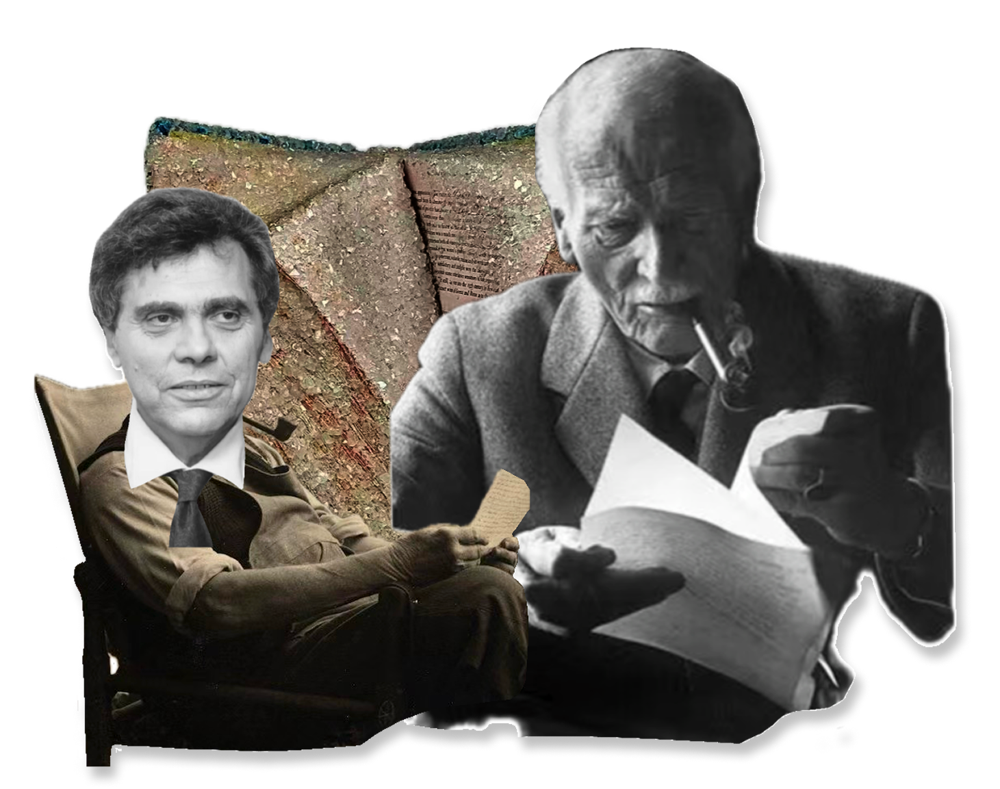
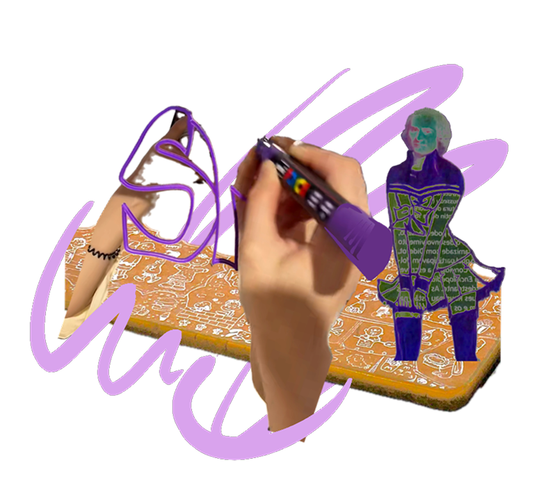
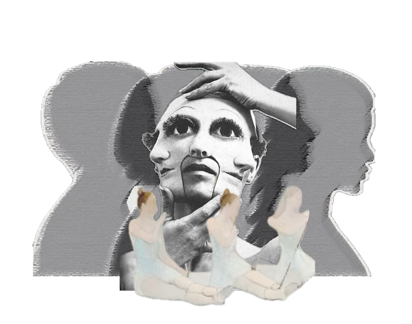
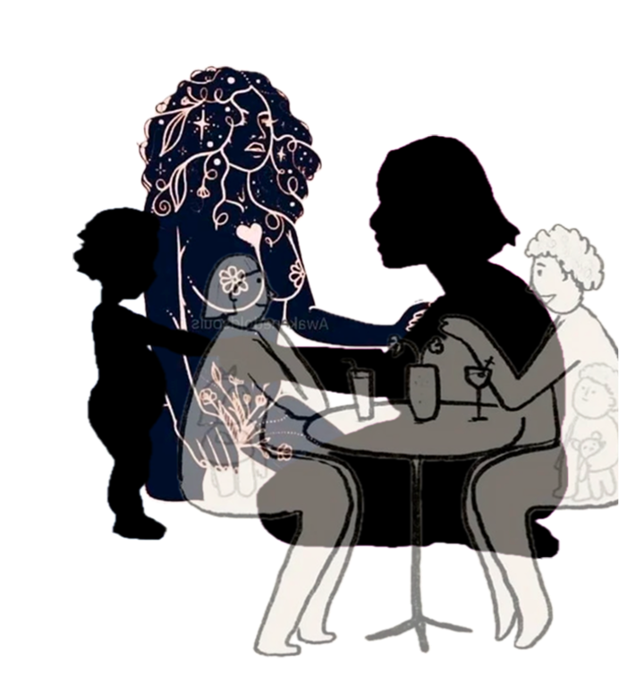
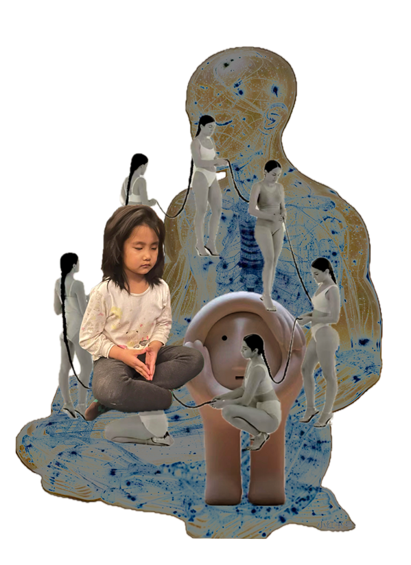
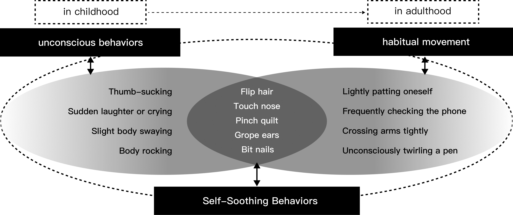

Installation Design: The Disappearance of Childhood

About the event
The comfort and joy brought by elements of childhood make me yearn even more to reconnect with and accept my true self when faced with the constraints of daily pressures and societal expectations. This installation uses the "inner child" to explore the paradox of identity. In seeking social acceptance, individuals often shield themselves and make adjustments to align with external demands. However, society's suppression of the inner child can lead to confusion and a crisis of self-identity. The act of "unwrapping" symbolizes a return to the inner child and a reconstruction of self-awareness.
Through this reflective exploration, The Disappearance of Childhood is not only a presentation of self-discovery but also a profound inquiry into the relationship between the individual and modern society. The work urges viewers to re-evaluate and protect their inner child, while also highlighting the complex balance between self-identity and societal expectations.
Inspiration
My love for children's toys, games and cartoons are my escape from the pressures of the adult world.
These childhood elements not only evoke nostalgia, but are also the embodiment of my attitude of pursuing simple pleasures in life.
I believe that by rediscovering our inner child, we can find those simple pleasures. This is not only an escape from reality, but also a journey of spiritual rebirth.
Research
source of the concept of inner child
The inner child is the light above all light, the leader of healing.
Jung
The disappearance of childhood also means the disappearance of adulthood.
Bozeman

reasons for exploring the inner child
methods to explore the inner child




Relationship between inner child and gestures

Concept
Making process
Five representative actions of self-soothing behaviors were selected
final outcome